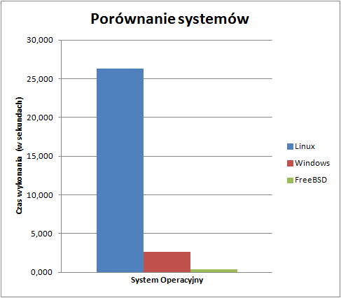

Sqlite
Wstęp
Test ten mierzył wydajność bazy danych sqlite na systemach operacyjnych Linux, FreeBSD i Windows.
Procedura testowa
Testy przeprowadzano programem Sqlite3. Test polegał na utworzeniu tabeli testowej, a następnie umieszczeniu w niej 500 rekordów. Test wykonany zostały trzy razy, mierzony był czas każdego powtórzenia.
Wynik dla systemu Linux
Tabela - wyniki ogólne
| Czas działania (w sekundach) | |
|---|---|
| Średnia arytmetyczna | 26,316 |
| Odchylenie standardowe | 1,589 |
| Wartość maksymalna | 28,875 |
| Wartość minimalna | 22,776 |
Tabela - wyniki szczegółowe
| Średni czas wykonania (w sekundach) | |
|---|---|
| labc192 | 27,472 |
| labc193 | 25,611 |
| labc194 | 27,057 |
| labc195 | 24,093 |
| labc197 | - |
| labc198 | - |
| labc199 | 27,349 |
Podsumowanie
Najlepiej z zadaniem poradził sobie komputer labc195 uzyskując czas 24,093s. Najgorzej poradził sobie komputer labc192 uzyskując czas 27,472s. Różnice te są jednak małe (niskie odchylenie standardowe) w związku z tym można przyjąć, że wszystkie komputery poradziły sobie z zadaniem równie dobrze.
Wynik dla systemu Windows
Tabela - wyniki ogólne
| Czas działania (w sekundach) | |
|---|---|
| Średnia arytmetyczna | 2,670 |
| Odchylenie standardowe | 0,498 |
| Wartość maksymalna | 7,866 |
| Wartość minimalna | 1,393 |
Tabela - wyniki szczegółowe
| Czas działania (w sekundach) | |
|---|---|
| labc192 | 2,360 |
| labc193 | 1,730 |
| labc194 | 1,804 |
| labc195 | 1,484 |
| labc197 | - |
| labc198 | - |
| labc199 | 5,975 |
Podsumowanie
Najlepiej z zadaniem poradził sobie komputer labc195 uzyskując czas 1,484s. Najgorzej poradził sobie komputer labc199 uzyskując czas 5,975s. Większość maszyn ma podobny czas działania. Wyjątkiem jest maszyna labc199, która na wykonanie polecenia potrzebowała trzy razy więcej czasu. Wpływ na to mogła mieć inna aplikacja korzystająca z dysku w tym samym czasie, w którym był wykonywany test.
Wynik dla systemu FreeBSD
Tabela - wyniki ogólne
| Czas działania (w sekundach) | |
|---|---|
| Średnia arytmetyczna | 0,409 |
| Odchylenie standardowe | 0,014 |
| Wartość maksymalna | 0,576 |
| Wartość minimalna | 0,246 |
Tabela - wyniki szczegółowe
| Czas działania (w sekundach) | |
|---|---|
| labc192 | 0,271 |
| labc193 | - |
| labc194 | 0,553 |
| labc195 | 0,563 |
| labc197 | - |
| labc198 | - |
| labc199 | 0,248 |
Podsumowanie
Najlepiej z zadaniem poradził sobie komputer labc199 uzyskując czas 0,248s. Najgorzej poradził sobie komputer labc195 uzyskując czas 0,563s. Różnica między maszynami 192 i 199 a 194 i 195 jest prawie dwukrotna, jednak ogólny czas potrzebny na wykonanie testu jest bardzo mały (poniżej sekundy). Możliwe, że wynika to z tego, iż test był wykonywany na maszynie wirtualnej, w związku z tym wyniki mogą być niemiarodajne.
Podsumowanie kilku systemów
Poniżej zostały przedstawiony wykres średniego czasu działania w zależności od użytego systemu operacyjnego na danej maszynie.

Najszybciej polecenie zostało wykonane na systemie FreeBSD. Jednak jak wcześniej wspominałem może to wynikać z faktu, że było to wykonywane na maszynie wirtualnej. Najwolniej (ze znaczną różnicą) polecenie zostało wykonane na systemie Linux.
MySQL
Wstęp
Test ten pozwala zmierzyć wydajność bazy danych MySQL
Procedura testowa
Testy przeprowadzano programem MySQL. Mierzony był czas wykonania 2500 razy polecenia insert. Test powtórzono trzy razy.
Wynik dla systemu Linux
Tabela - wyniki ogólne
| Czas działania (w sekundach) | |
|---|---|
| Średnia arytmetyczna | 95,121 |
| Odchylenie standardowe | 9,564 |
| Wartość maksymalna | 128,867 |
| Wartość minimalna | 80,516 |
Tabela - wyniki szczegółowe
| Czas działania (w sekundach) | |
|---|---|
| labc192 | 85,599 |
| labc193 | 94,530 |
| labc194 | 89,008 |
| labc195 | 103,677 |
| labc197 | 94,983 |
| labc198 | 100,362 |
| labc199 | 97,685 |
Podsumowanie
Najlepiej z zadaniem poradził sobie komputer labc192 uzyskując czas 85,599s. Najgorzej poradził sobie komputer labc195 uzyskując czas 103,677s. Średnie odchylenie standardowe wynosi 9,564s. jest to około 10% całego potrzebnego czasu na ukończenie polecenia.
PgSQL - sieć
Wstęp
Test ten mierzył wydajność bazy danych Postgres na dalekiej maszynie.
Procedura testowa
Testy przeprowadzano programem Postgres na zewnętrznej maszynie. Testowano czas wykonania polecenia insert 1500 razy.
Wynik dla systemu Linux
Tabela - wyniki ogólne
| Czas działania (w sekundach) | |
|---|---|
| Średnia arytmetyczna | 20,721 |
| Odchylenie standardowe | 2,778 |
| Wartość maksymalna | 29,889 |
| Wartość minimalna | 14,397 |
Tabela - wyniki szczegółowe
| Czas działania (w sekundach) | |
|---|---|
| labc192 | 26,742 |
| labc193 | 14,732 |
| labc194 | - |
| labc195 | 14,726 |
| labc197 | 6,011 |
| labc198 | 6,102 |
| labc199 | 26,686 |
Podsumowanie
Najlepiej z zadaniem poradził sobie komputer labc197 uzyskując czas 6.011s. Najgorzej poradził sobie komputer labc192 uzyskując czas 26,742s. Różnice między poszczególnymi maszynami są spore - może to wynikać z użycia łącza na maszynie docelowej.
PgSQL
Wstęp
Test ten mierzył wydajność bazy danych Postgres na lokalnej maszynie.
Procedura testowa
Testy przeprowadzano programem Postgres. Liczono czas wykonania polecenia insert 1500 razy.
Wynik dla systemu Linux
Tabela - wyniki ogólne
| Czas działania (w sekundach) | |
|---|---|
| Średnia arytmetyczna | 14,920 |
| Odchylenie standardowe | 0,253 |
| Wartość maksymalna | 15,285 |
| Wartość minimalna | 14,585 |
Tabela - wyniki szczegółowe
| Czas działania (w sekundach) | |
|---|---|
| labc192 | 14,833 |
| labc193 | 15,063 |
| labc194 | 1,426 |
| labc195 | 14,909 |
| labc197 | - |
| labc198 | - |
| labc199 | 14,876 |
Podsumowanie
Najlepiej z zadaniem poradził sobie komputer labc194 uzyskując czas 1,426s. Najgorzej poradził sobie komputer labc193 uzyskując czas 15,063s. Wszystkie wyniki oprócz maszyny labc194 są zbliżone. Wynik maszyny labc194 wydaje się zbyt dobry jak na wykonanie tego polecenia - możliwe iż nie zostało ono wykonane poprawnie.